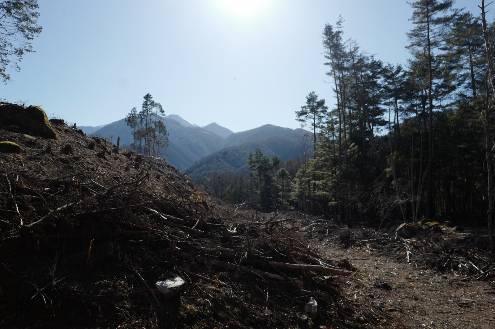
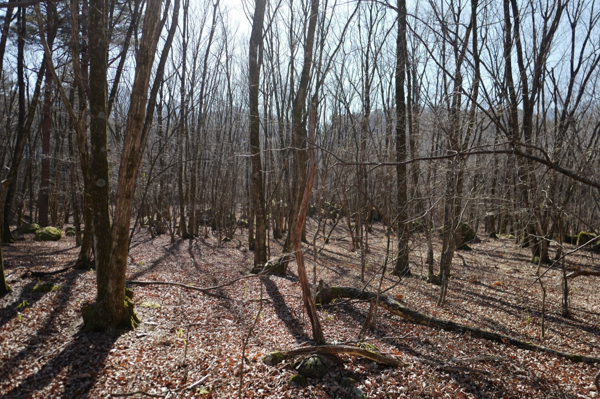
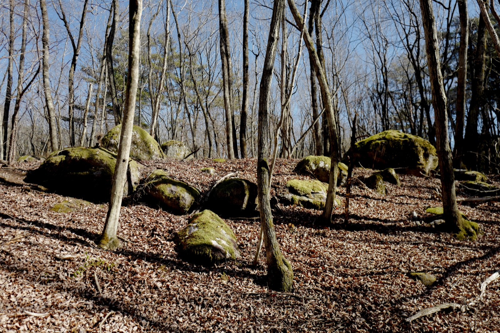
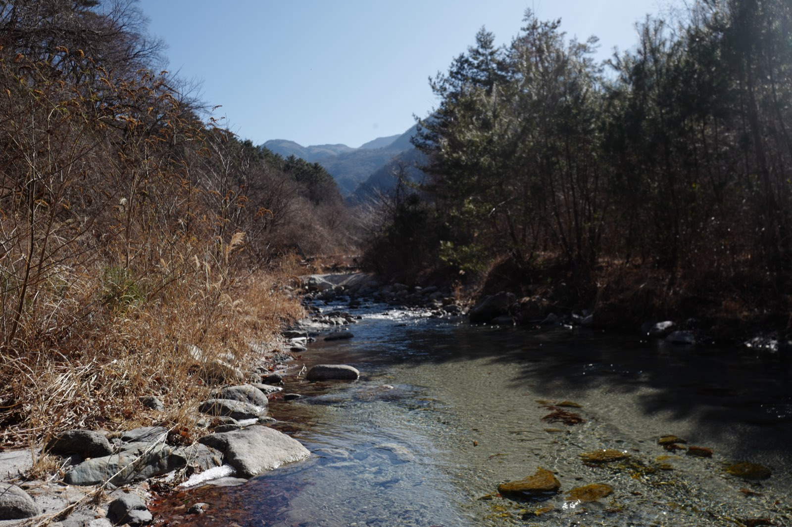

謎は、
宇宙の果てではなく、
ここにある。
意識——なぜ脳に、主観的な体験が宿るのか。
意識の究極問題を問い、善く生きることへ。
The greatest mystery is not at the edge of the universe. It is right here.
Concept理念
いま、あなたがこれを読んでいる。
その「感じられている」ということは、いったい何なのでしょうか。
科学がこれほど進んだ現代においてなお、
意識は、宇宙でもっとも身近で、もっとも大きな謎のままです。
そもそも「意識」という概念は、どこから来たのでしょうか。
意識は、人間だけのものではないのかもしれません。
機械にも、宿るのかもしれません。
そして、もしかしたら——
「一人称の意識体験がある」ということ以上には、
何も言えないのかもしれません。
意識のハードプロブレムから、一人称の意識の発見まで——
意識研究財団は、この問いの全域を引き受けます。
意識の究極の問いを、縦横無尽に問い直し、
日常の中での実践に生かす——
それが、意識研究財団の目的です。
謎は、宇宙の果てではなく、ここにある。
この謎を、閉じた答えではなく、開かれた問いとして——
私たちは、共に問う人を歓迎します。
二つの軸Two Axes
意識の哲学的・科学的探求
なぜ物理的な脳に、そして機械に、主観的な体験（クオリア）が宿りうるのか。意識のハードプロブレムを中心に据え、哲学と科学の両面から意識の究極の問いに取り組みます。その同心円上で、意識という概念の誕生と変遷を遡り、機械をも含んだ意識の議論に向き合います。
一人称的な意識の発見
森・瞑想・仏教・里山・縄文——概念としてではなく、一人称的な体験として、多様な意識のあり方を発見します。森を実践のフィールドとして、非日常の意識が帰ったあとの日常の意識へと還っていくことを目指し、どのような意識が、どのような生き方が良いのかという問いに応答します。
二つの軸は、「意識の究極の問い」を中心に響き合います。
すべてのプロジェクトは、「そこで言う意識とは何か」という問いを共有し、
問い続けます。
研究プロジェクトResearch Projects
意識の究極の問いを中心に、研究プロジェクトを据えています。
いま3つのプロジェクトが進行中、4つのプロジェクトが構想中です。
いずれも内部のワーキンググループとして推進し、
「そこで言う意識とは何か」を常に問い続けます。
意識とテクノロジーPJ
ハルシネーションマシンをはじめ、意識変容とテクノロジーの研究開発を支援。機械をも含んだ意識の議論に、実装から向き合います。
仏教と意識PJ
瞑想・慈悲・縁起・無我。2500年にわたり体系的に論じられてきた意識の探求を、西洋哲学と突き合わせられる形で問い直します。
意識と里山PJ
産業革命以前の暮らしにおける意識と時間のあり方を掘り下げます。森での非日常の意識を、日常の意識へと還すことを目指します。
意識の根源探求PJ構想中
意識という概念・心は、いかに誕生したか。進化的起源と概念の系譜から、概念以前の意識を問います。
意識のハードプロブレムPJ構想中
なぜ物理的な脳に主観的体験（クオリア）が宿るのか。意識の究極の問いに、哲学と神経科学の両面から正面から取り組みます。
実験意識考古学PJ構想中
考古学的な考察と実験考古学の実践から、縄文をはじめとする古代の心のあり方を探ります。縄文遺跡が点在する森を、実践のフィールドとします。
自然計算AIPJ構想中
自然が行う計算に学び、生きとし生けるもの、あらゆる存在のあり方を汲んだAIの開発を構想します。
4つのプログラムPrograms
カンファレンス
年に一度、意識の問いを公開の場で開きます。メインストリームの議論への接続と、その前提を問い直すオルタナティブの提示を、ひとつの舞台で行います。
研究支援
意識の問いを問う研究者への、グラントによる支援。世界の動向を踏まえながら、日本発の戦略的な研究支援を設計します。若手研究者への支援も明確に位置づけます。
森での活動
机上の議論だけでは、意識の「価値」には迫れません。フィールドとしての森を持ち、身体・生活・技術を通した実践的な探求を、学術と往復させます。
Discordコミュニティ
各研究プロジェクトごとに交流やイベントを行っていきます。
森The Forest
「究極の問いを、
土地と森に降ろす。」
甲斐駒ヶ岳の麓、縄文中期の精神文化圏の中心地に隣接する、
山梨県北杜市武川町の山林。
2026年7月、この森を財団の実践フィールドとして取得しました。
遡行の軸を、観念ではなく身体で遡り、
現在に異なる身体を獲得し、未来を問い直すための場所です。
普遍層 ── 沈黙と観想
宗教や文化の違いを超えて共有される、沈黙・観想の実践。意識の根源へと向かう静けさの層。
縄文的層 ── 土・火・水・森仕事
土に触れ、火を焚き、水を汲み、森に手を入れる。暮らしの実践から立ち上がる意識の層。
この森には、約60名を収容する瞑想ホールを、
VUILD社の設計と参加型のDIY施工により、数年をかけて建てていきます。
瞑想リトリート、狩猟採集の体験、時計やスマホを手放して過ごすプログラム——
研究者だけでなく、広く一般に開かれた実践の場をつくります。
森での非日常の意識が、帰ったあとの日常の意識へと還っていくこと。
それが、この場所の目指すところです。




取得した森の下見より──山梨県北杜市武川町（2025年2月）
Conference 2026カンファレンス
マシン・
コンシャスネス
マシンの意識と
ヒューマンの意識
基調講演：金井良太
マシンの意識は、ヒューマンの意識とどう関わるのか。ベイエリアで現に起きているマシン・コンシャスネス議論の文脈から出発し、正面から接続する一日。
マシンの意識と
モア・ザン・ヒューマンの意識
基調講演：池上高志
マシンの意識は、モア・ザン・ヒューマンの意識とどう関わるのか。植物の意識、意識概念の系譜、意識の進化的起源——前提そのものを問いに付します。
メインストリームが暗黙の前提としているもの——所与としての意識概念、計算論的機能主義、近代西洋的な人間像——を問える場は、世界にもほとんど存在しません。そこに、日本から差し込みます。
発表30分＋討論30分の、議論を中心に据えた形式で行います。開催に先立ち、若手研究チームによる「マシン・コンシャスネス現状レポート」を作成・公開。会場ではハルシネーション・マシンの展示も予定しています。カンファレンスの記録はウェブレポートとして無料公開します。
登壇者・参加申込の詳細は、近日公開します。
活動報告Activities
意識研は2023年に活動を開始し、2024年9月に一般財団法人となりました。
2025年度までは、「テクノロジー」「メディテーション」「ウェルビーイング」の
三つのテーマを軸に、研究会・リトリート・読書会・研究支援を重ねてきました。
三つのプロジェクトを継続しつつ、恒常的な拠点となる「森」の構想が本格始動。
ハルシネーションマシンTECHNOLOGY
鈴木啓介氏（北海道大学）主導のリアルタイム幻覚機械の開発を継続支援。国際人工生命会議 ALIFE2025（京都）でのデモ展示、ASSC2025（ギリシャ・クレタ島）での発表。国際学会「Models of Consciousness 6」（北海道大学・初のアジア開催・約90名）の開催。「QUALIUS Retreat on Non-Ordinary States of Consciousness」のスポンサーも務めました。
仏教と意識MEDITATION
藤野正寛氏（立命館大学）主導のもと「研究者のための瞑想リトリート2025」を立命館大学と共催（静岡・日月倶楽部、3泊4日、多分野の研究者23名が参加）。参加研究者による人工知能学会2026企画セッション「瞑想とAI」が採択。藤野氏のTEDx Kyoto University講演は公開4ヶ月で再生18万回超。タイ・MCU大学でのヴィパッサナー瞑想実地調査も実施。
意識と里山WELL-BEING
信原幸弘氏を中心に、宮沢賢治読書会・ベルクソン読書会を毎月開催。山梨県北杜市・山形県高畠町での合宿、糞土庵（茨城）・「無の会」（福島）へのフィールドワークを実施。
森の構想計画FOREST
山梨県北杜市に森を購入し、意識研究財団の実践的活動の場とする計画を本格化。VUILD株式会社とともに建築プランを策定中。
一般財団法人意識研究財団として法人化。三つのチーム体制で活動を本格化。
ハルシネーションマシンTECHNOLOGY
鈴木啓介氏（北海道大学）の「ハルシネーションマシン（幻覚機械）」を取り上げ、変性意識をめぐるディスカッションと体験会を開催、初号機アップデートの開発資金を支援。
仏教と意識MEDITATION
研究者向け瞑想リトリートの開催支援。永沢哲氏・藤田一照氏・井上ウィマラ氏を招き、新妻雅弘氏・下西風澄氏・ハナムラチカヒロ氏との対談形式の研究会を実施。
意識と里山WELL-BEING
「意識と里山PJ」を開始。里山的な自足的・循環的な暮らしの可能性と意義を問う。パーマカルチャーセンタージャパンを訪問し、宮沢賢治読書会・ベルクソン読書会を開始。
（財団設立前）
「意識研」として活動開始。信原幸弘（東京大学名誉教授）を代表に、三つのテーマで連続研究会を開催。
マインドアップローディング
話題提供：渡辺正峰氏（東京大学）。マインドとは何か、アップローディングの原理的・技術的可能性、その後の世界を問いました。この対談は、信原幸弘×渡辺正峰『意識はどこからやってくるのか』（ハヤカワ新書）として出版されました。
事業報告・財務Reports & Finance
事業報告書
財務ハイライト ── 2024年度決算
2025年3月31日現在。経常収益のうち受取寄付金 13,200,000円。
寄付実績
| 年 | 受取寄付金 | うち研究助成 | うち運営費用など |
|---|---|---|---|
| 2023 | 4,200,000円 | 2,400,000円 | 1,800,000円 |
| 2024 | 4,500,000円 | 2,700,000円 | 1,800,000円 |
| 2025 | 5,000,000円 | 3,200,000円 | 1,800,000円 |
| 2026（進行中） | 3,100,000円 | 2,200,000円 | 900,000円 |
主な研究助成先：北海道大学、立命館大学など
法人概要About
- 名称
- 一般財団法人 意識研究財団
The Consciousness Research Foundation - 目的
- 当法人は、意識に関する研究の推進と支援に努め、人間の意識や価値、生きる意味などの根源的な問いを探求するとともに、広く社会に問いかけることで、慈悲に基づいた個人や社会の成長を促し、文化の発展に寄与することを目的とする。
- 設立年月日
- 2024年9月26日
- 所在地
- 山梨県甲府市里吉4-8-40
- 役員
-
代表理事 七沢智樹
理事 七沢智樹／國府田淳／長谷川愛／藤野正寛
監事 上野さやか
評議員 信原幸弘／渡邉正峰／芦澤大地